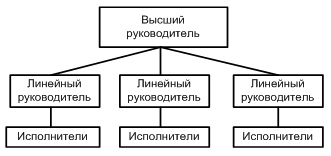
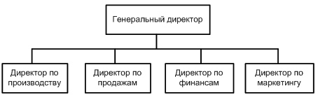
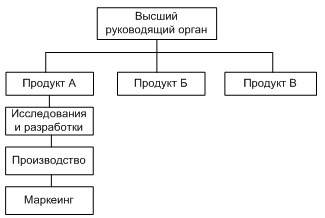
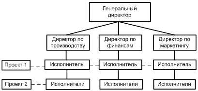

Организационные структуры¶
Организационная струтктура — состав, взаимодействие, соподчиненность, а также распределение работы по подразделениям и органам управления, между которыми формируются определенные отношения, связанные с реализацией властных полномочий, потоков распоряжений и информации.
Важно иметь формализованную организационную структуру вне зависимости от масштаба компании. Для разных компаний подходят разные типы организационных структур.
Линейная структура¶
Подразумевает, что каждым подразделением руководит управленец, осуществляющий единоличное руководство.
Разделяет на линию руководителей и линию исполнителей:
Подходит малому бизнесу (не больше сотни сотрудников, см. закон).
Примечание
Малый бизнес — это хорошо для экономики. Он имеет возможность быстро адаптироваться на постоянно меняющихся рынках.
Функциональная структура¶
Подразделения внутри фирмы создаются в соответствии с функциями (исследование, проектирование, производство и т.д.)
Если линейная структура определяет в первую очередь подчинение, то здесь также определяются функции каждого из отделов.
- Преимущества:
- Уменьшает дублирование усилий.
- Стимулирует специализацию.
- Улучшает координацию в фунакциональных областях.
- Недостатки:
- Отделы могут быть более заинтересованы в своих целях, чем общих целях организации. Это увеличивает возмоожность конфликтов между функциональными областями.
- Плохая работа одного отдела может саботировать всю работу.
- Есть «незаменимые».
- В большой организации цепь команд от руководителя до непосредственного исполнителя становится слишком длинной.
Дивизиональная структура¶
Основана на выделении крупных автономных производственно-хозяйственных подразделений (отделений, дивизионов) и соответствующих им уровней управления с предоставлением этим подразделениям оперативно-производственной самостоятельности и с перенесением на этот уровень ответственности за получение прибыли.
- Практический опыт позволяет выделить три типа дивизиональных организационных структур:
- Ориентированная на потребителя (у компании крупный заказчик, который влияет на структуру организации, например в ситуации монопсонии)
- Продуктово-дивизиональная структура (дивизионы делятся по продуктам)
- Регионально-дивизиональная структура (построить завод во Владивостоке, чтобы не вести из Москвы)
Подходит крупному производству.
Матричная структура¶
В отличие от других, матричная оргструктура характеризуется наличием как вертикальных, так и горизонтальных управленческих связей. Она приводит к нарушению принципа единоначалия и допускает одновременное наличие у одного сотрудника сразу двух руководителей.
В такой структуре используется проектный подход. То есть у человека первый начальник — тот, кто по функциональной зависимости начальник плюс тот кто руководит проектом.
Примечание
Проект характеризуется наличием органиченных сроков, ресурсов, исполнителей и конкретными результатами.
- Преимущества:
- у проектов появляется дух конкуренции
- нет незаменимых
Матричная оргструктура отличается от проектной оргструктуры тем, что проектная оргструктура является временной и нужна для внезапно возникшей нетипичной для предприятия задачи.
Подходит для инновационных компаний.
Особенностью управления инновационной деятельностью является то, что инновации — это рискованно и необязательно принесит прибыль. Часто инновации является реактивными — в ответ на инновации конкурентов. Часто также нужно венчурное финансирование (от слова «venture» — «авантюра»).
Примечание
Следует различать термины новация (новшество) и инновация (нововведение). Первое — это что-то новое (чертеж ракеты), второе — это практическое применение, освоение новой идеи (рабочая ракета).
В последние годы появилось большое количество других организационных структур. Устоявшиеся — это вот эти четыре.